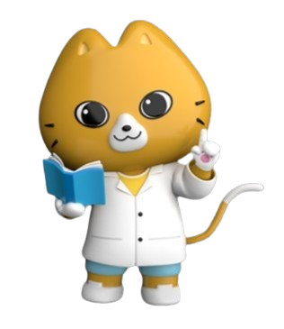

🧪 실험 진행
막대자석을 드래그해서 물체 위로 옮겨 보세요.
🧲 자석에 붙는 물체 찾기
실험 방법을 골라 주세요!
🔬
탐구 활동
실험하기
실험하기
미리 준비된 7가지 물체로
실험해 보세요.
실험해 보세요.
🧺
내가 정한 물체로
실험하기
실험하기
원하는 물체를 골라
직접 실험해 보세요.
직접 실험해 보세요.
🔬 실험 방법
- 막대자석에 붙는 물체와 붙지 않는 물체를 예상해 보세요.
- 막대자석을 움직여 각각의 물체에 가까이 해 보세요.
- 어떤 물체가 자석에 붙는지 찾아보세요.

막대자석에 어떤 물체가 붙고 붙지 않을지
실험 전에 예상해 보세요.
실험 전에 예상해 보세요.
🧺 실험할 물체 고르기
책상 위에 놓을 물체를 2~7개 선택하세요.
선택: 0개
📝 나의 예상
각 물체가 막대자석에 붙을지, 붙지 않을지 예상해 보세요.
| 물체 | 붙음 (O) | 안 붙음 (X) |
|---|
실험 결과와 나의 예상을 비교해 봐요.
📊 예상 vs 실험 결과
| 물체 | 나의 예상 | 실험 결과 | 정답? |
|---|
🎉 실험이 끝났어요! 🎉
📖
정리하기
🧺
내가 정한 물체로
실험하기
실험하기
🔬
탐구 활동
실험하기
실험하기
🔄
다시 하기
- 철로 된 물체와 자석은 붙습니다.
- 유리, 나무, 알루미늄, 플라스틱으로 된 물체와 자석은 붙지 않습니다.
- 유리, 나무, 알루미늄, 플라스틱으로 된 물체와 자석은 붙지 않습니다.